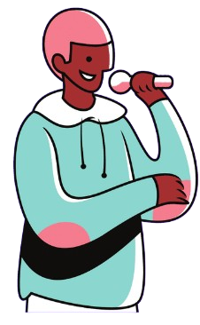

BBL
Bem-Vindo
ao BeatBoxLife
BBL
Bem-Vindo
ao BeatBoxLife
Beatbox é a arte de criar sons usando boca, nariz e a voz (principalmente a voz). É uma expressão musical que surgiu nos anos 1980 nas ruas de nova york pelo movimento hip hop. O principal objetivo era fazer sons de batidas de sons musicais sem usar um instrumento físico. Então, naquela época, as pessoas usavam 4 principais sons que são usados até nos dias de hoje, que são:
O som "Kickdrum" no beatbox é uma representação da batida de um bumbo de bateria.
O som "snare" no beatbox é uma representação vocal do som produzido por uma caixa de bateria.
O som "hi-hat" no beatbox é uma representação vocal som de um prato de chimbal em uma bateria.
O som "bass" no beatbox é uma representação vocal do som de um baixo em uma música.
O principal torneio, comandado pelo ‘swissbeatbox’, é o Grand Beatbox Battle, que acontece no mês de outubro todos os anos, e dura aproximadamente 3 dias. Nesse evento, beatboxers de todo o mundo vão à cidade que estará hospedando o torneio (Geralmente, Varsóvia na Polônia, em Basel na Suíça, ou Tóquio no Japão). Lá, é feito competições de 1 vs 1 em uma chave de 16 beatboxers, aonde o 1º lugar leva o prêmio de $20.000 dólares e é lá onde os beatboxers podem expressar sua música no palco.
O Grand Beatbox Battle é um evento que existe desde 2009. Desde então, vários beatboxers de todo o mundo buscam participar dessa batalha e serem reconhecidos internacionalmente pelo seu talento. Conforme o tempo foi passando, a sua popularidade foi aumentando, mas foi especificamente, em 2017 que o evento começou a se tornar o que é hoje.
o GBB nem sempre foi famoso, mas atraiu muito público com o tempo. Pode-se dizer que ele é um bom parâmetro para compararmos o beatbox dos dias de hoje com o beatbox de antigamente. Graças as batalhas, é possível ver que elas tem evoluido gradualmente conforme o passar dos anos, passando por sons extremamente difíceis de fazer, como o Inward Bass. Ter um controle desse som e de vários outros requer muito tempo e treino. Por isso, vários beatboxers que vemos competindo no GBB tem mais de 5 anos de prática, facilmente.
O Grand Beatbox Battle é um evento que possibilita a competição entre países acontecer. Se você é uma pessoa competitiva, você vai amar esse mundo! Por motivo de curiosidade, os países que mais ganharam GBB foram Inglaterra, França e Estados Unidos. Por isso, em um evento grande como o GBB, tudo é possível! Com vídeos no youtube de batalhas passando há mais de 40 milhões de visualizações. Você está pronto para entrar nessa jornada?
Se tornar um beatboxer é muito desafiador. Todos os beatboxers que estão na cena, no mais alto nível, tiveram que dar duro de si todos os dias, as vezes treinando 8 horas por dia, e muitas das vezes acabando com a garganta prejudicada, com o maxilar lesionado... Já teve casos, como do Codfish, que ele estava treinando sons de respiração enquanto fazia beatbox. Os sons que ele produziu com a boca foi tão intenso que ele desmaiou, e como ele estava de pé, ele caiu e bateu a cabeça na parede, tomando vários pontos. Por isso, apesar de acharmos que beatbox é só mais uma 'arte', lembra que, ela é tão difícil como todas as outras. Os beatboxers que estão nas cenas, são relativamente novos, mas mesmo assim, rimam há mais de 10 anos. Por isso, todo o apoio à eles.